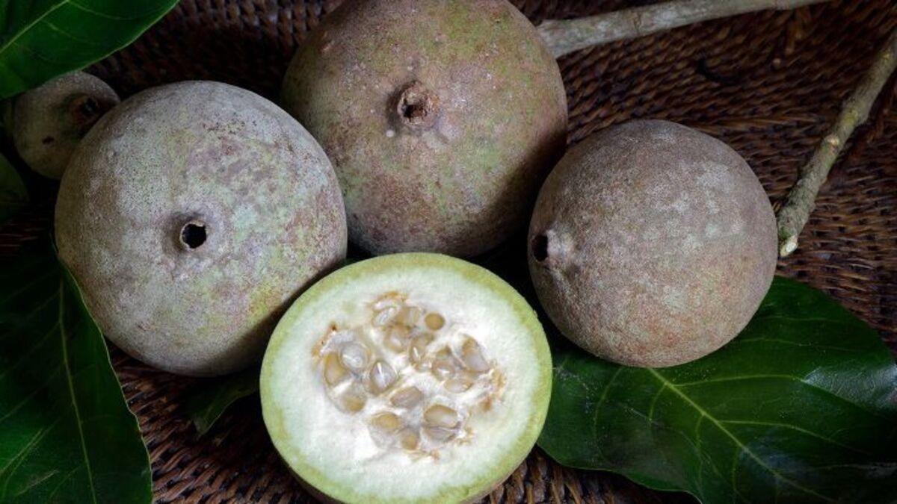
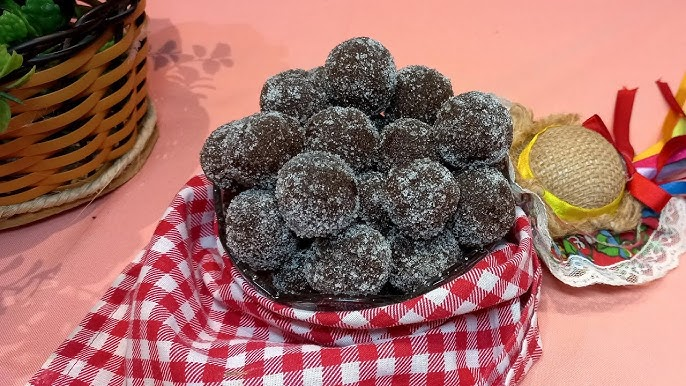

Aspectos Químicos do Jenipapo
O jenipapo é uma fruta rica em ferro e vitaminas, principalmente a vitamina C. Ele é conhecido por suas propriedades medicinais, sendo utilizado tradicionalmente no tratamento de anemias e problemas digestivos.
Além de seus benefícios para a saúde, o jenipapo é usado na culinária para fazer doces, licores e xaropes, aproveitando seu sabor adocicado e suas propriedades nutricionais.
Receita: Doce de Jenipapo
Ingredientes
- 1 xícara de chá de açúcar
- 1 xícara de chá de polpa de jenipapo
Modo de Preparo
- Retire toda a casca e os caroços do jenipapo.
- Coloque a polpa em um triturador ou liquidificador, bata bem e transfira para uma panela.
- Adicione o açúcar e cozinhe em fogo baixo até que a mistura solte do fundo da panela.
- Faça bolinhas com a massa, passe no açúcar e está pronto para servir.